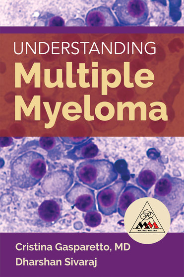

On June 15th, join the Duke Division of Hematologic Malignancies & Cellular Therapy
in a bike ride to raise money for Multiple Myeloma research!
Directions
Duke University HospitalNorth Pavilion
2400 Pratt Street
Durham, NC 277058
http://map.duke.edu/building/207
The Duke Multiple Myeloma Bike Ride is a 25K or 50 K or 100 K road bike ride from the Duke campus through rural Durham and Orange Counties. Your registration fee will help support the families and patients undergoing treatment at the Multiple Myeloma Center at Duke as well as to support research against this disease. These three rides will start in front of Duke Hospital North Pavilion 2400 Pratt Street, Durham 27705 and tour through rural Durham and Orange Counties before returning to Duke. The terrain is typical for the Piedmont area of North Carolina. The roads wind through forests and farms with short but frequent rolling hills. The 100 K route continues on into rural Orange County before returning to Duke. The 50 K and 100 K rides will begin at 8 am, the 25K ride will begin at 9 am. All three routes will stay open until 3 pm. There will be rest stops and SAG vans throughout the routes.

To learn more about Multiple Myeloma, check out our new book. Proceeds go towards supporting the Duke Myeloma Research Fund.
Follow Us for Updates!